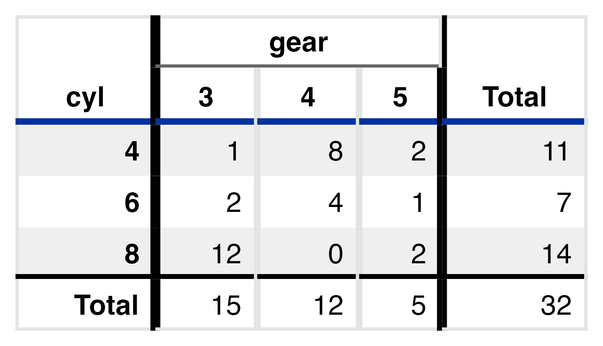
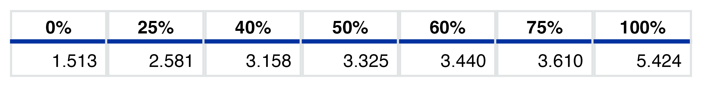
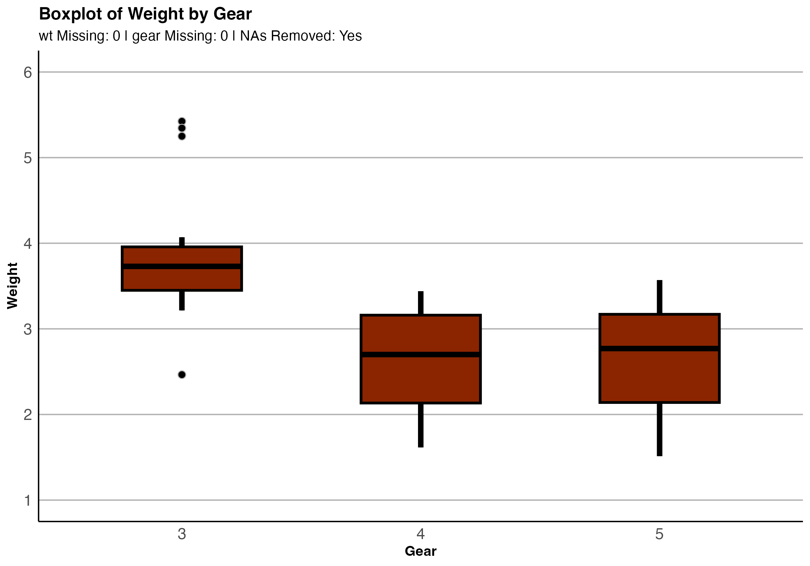
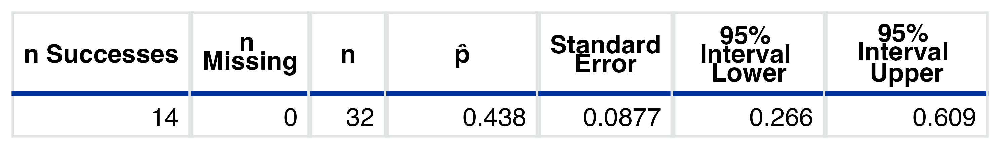
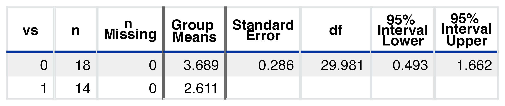
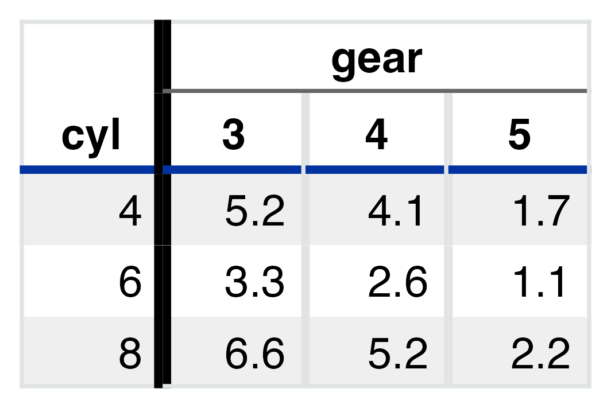
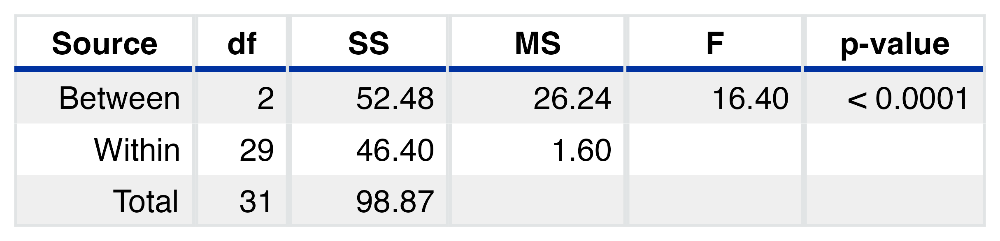

Pretty Plots and Charts for Introductory Statistical Concepts
Note: Due to the fact that some functions return tables (which are essentially HTML code), the README on GitHub does not display properly. As a result, the output is an image of the resulting table rather than the actual HTML table.
gvsu215 contains a series of wrapper functions around select mosaic and ggformula functions, with help from flextable. The goal is to provide introductory statistics students/learners with an easy way to generate nice-looking plots and tables without focusing on the code used to create them. All tables and plots generated from this package have been doctored and have had themes pre-applied. As such, output will not print in “messy” format to the R console and can be used interactively, including in R Markdown documents.
This package was designed and tailored for Grand Valley State University (course code: STA 215) but can be used by anyone.
Installation
This package is not yet on CRAN. You can install the development version of gvsu215 from GitHub with:
# install.packages("devtools")
devtools::install_github("ian-curtis/gvsu215")Prerequisites
In order to use this package, you will need a basic understanding of R syntax and how to run a function in your preferred working environment. Functions use formula syntax (e.g., var1 ~ var2) and thus knowledge of formulas is needed as well.
Examples
This package is best used for creating simple plots and charts where extensive customization is not necessary. For instance, you may just want to see summary statistics, including one- or two-way tables.
tbl_2var(mtcars, gear~cyl)
tbl_num_sum(mtcars, ~wt, na_rm = TRUE)Or maybe you just need percentiles:
tbl_pctile(mtcars, ~wt, probs = c(0, .25, .4, .5, .6, .75, 1))
There is also support for a variety of plots…
plot_bar(mtcars, ~cyl, type = "percent")
plot_box(mtcars,
wt~gear,
fill = 'orangered4',
x = "Gear",
y = "Weight",
title = "Boxplot of Weight by Gear")
plot_scatter(mtcars, wt~drat)
#> NAs always removed (in pairs) for scatterplots.… and statistical inference.
infer_1prop(mtcars, ~vs, success = 1)
infer_paired(mtcars, var1 = ~drat, var2 = ~wt)
infer_2mean_int(mtcars, wt~vs)
suppressWarnings(infer_chisq(mtcars, cyl~gear))
suppressWarnings(infer_chisq(mtcars, cyl~gear, type = "expected"))
infer_anova(mtcars, cyl~gear, digits = 2)
Help, Bug Reports, and Feature Requests
Errors happen! If you come across an error you don’t think you should have, feel free to create an issue on GitHub. If you’d like to suggest a change or addition, you can use the issues page for that, too!